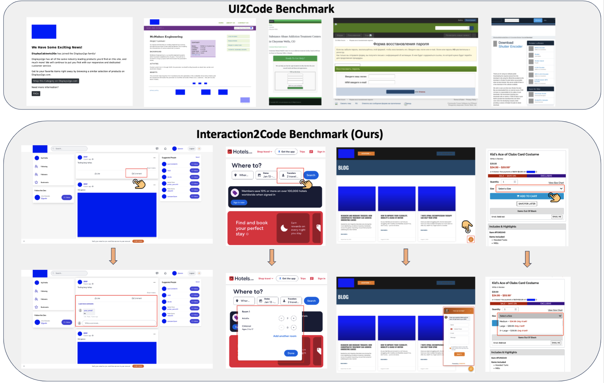

Multimodal Large Language Models (MLLMs) have demonstrated remarkable performance on the design-to-code task, i.e., generating UI code from UI mock-ups. However, existing benchmarks only contain static web pages for evaluation and ignore the dynamic interaction, limiting the practicality, usability and user engagement of the generated webpages. To bridge these gaps, we present the first systematic investigation of MLLMs in generating interactive webpages. Specifically, we formulate the Interaction-to-Code task and establish the Interaction2Code benchmark, encompassing 127 unique webpages and 374 distinct interactions across 15 webpage types and 31 interaction categories. Through comprehensive experiments utilizing state-of-the-art (SOTA) MLLMs, evaluated via both automatic metrics and human assessments, we identify four critical limitations of MLLM on Interaction-to-Code task: (1) inadequate generation of interaction compared with full page, (2) prone to ten types of failure, (3) poor performance on visually subtle interactions, and (4) insufficient undestanding on interaction when limited to single-modality visual descriptions. To address these limitations, we propose four enhancement strategies: Interactive Element Highlighting, Failureaware Prompting (FAP), Visual Saliency Enhancement, and Visual-Textual Descriptions Combination, all aiming at improving MLLMs’ performance on the Interaction-toCode task. The Interaction2Code benchmark and code are available in https://github. com/WebPAI/Interaction2Code.
We show the comparison between UI2Code benchmark and our Interaction2Code benchmark. UI2Code benchmark only contains the static webpage, whereas Interaction2Code contains interactive webpage, which is represented by interactive prototyping.
